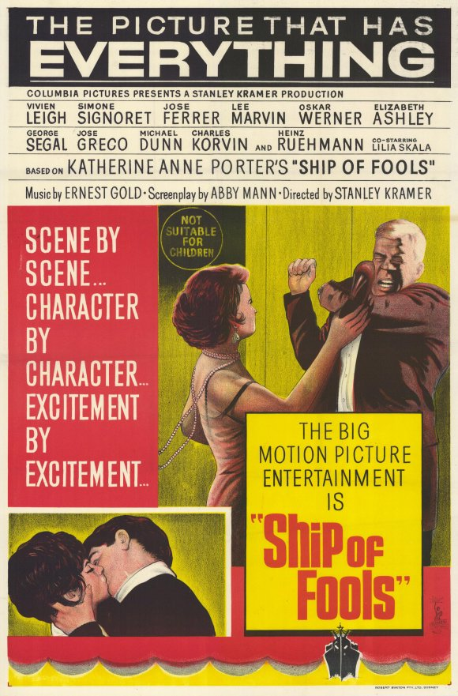

Ship of Fools
38th Academy Awards
(Oscars 1966)
8 Nominations, 2 Awards
| Nominations | ||
|---|---|---|
| Category | Nominees | Result |
| Best Picture | Stanley Kramer | Nominated |
| Actor | Oskar Werner | Nominated |
| Actress | Simone Signoret | Nominated |
| Actor in a Supporting Role | Michael Dunn | Nominated |
| Writing (Screenplay--based on material from another medium) | Abby Mann | Nominated |
| Cinematography (Black-and-White) | Ernest Laszlo | Won |
| Art Direction (Black-and-White) | Joseph Kish and Robert Clatworthy | Won |
| Costume Design (Black-and-White) | Bill Thomas and Jean Louis | Nominated |